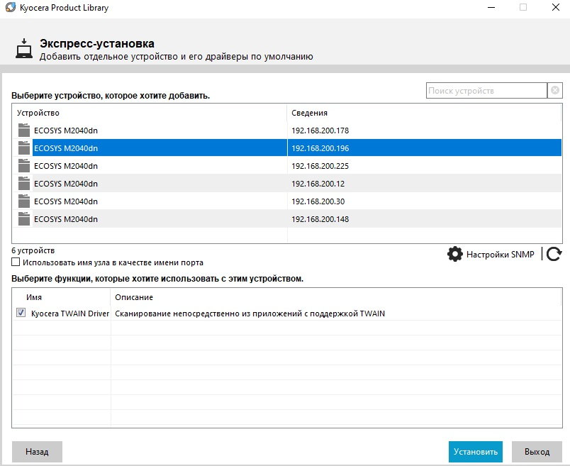
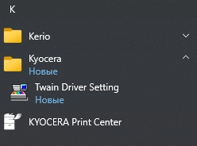
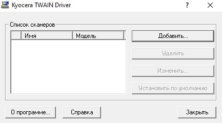
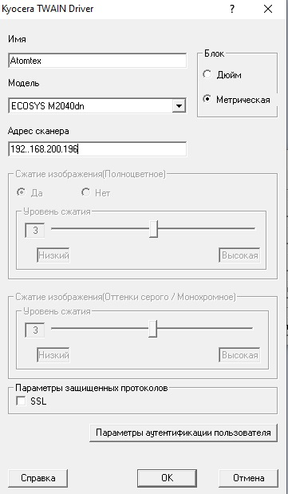

- Скачиваем TWAIN драйвер с официального сайта Принтера/МФУ
- Распаковываем архив и запускаем setup.exe
- Уточняем ip-адрес принтера/МФУ и выбираем его в списке  В меню "выберите функции, которые хотите использовать с этим устройством" ставим галочку
- Нажимаем "Далее" и завершаем установку
- В меню "Пуск" находим и запускаем утилиту "TWAIN Driver Setting" .
- В окне утилиты нажимаем "Добавить" 
- В открвышемся окне заполняем имя сканнера (произвольно), в выпадающем списке выбираем модель сканнера и вводим ip-адрес МФУ 
- Нажимаем "ок". Установка и настройка драйева завершена